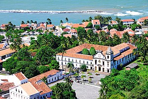
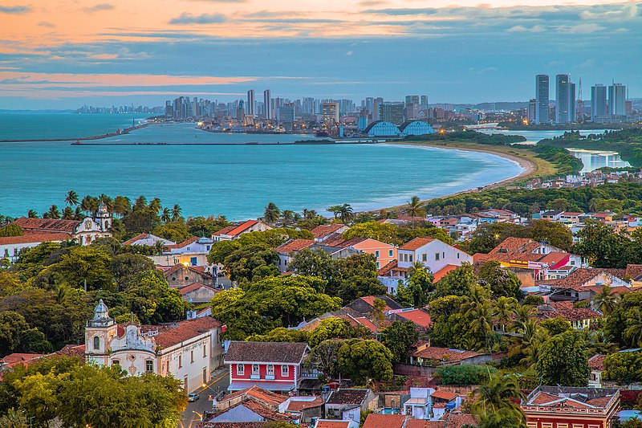
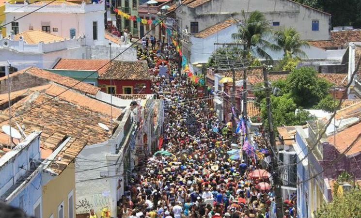

Mosteiro de São Bento
O Mosteiro de São Bento é um dos mais antigos e importantes templos de Olinda. Fundado em 1582, é conhecido por sua arquitetura barroca e por abrigar obras de arte sacra dos séculos XVII e XVIII.
Além de ser um importante marco histórico e cultural, o Mosteiro de São Bento também é um lugar de tranquilidade e reflexão, com suas missas diárias e momentos de oração.
Alto da Sé
O Alto da Sé é um dos principais pontos turísticos de Olinda. Localizado no topo de uma colina, o local é conhecido por sua vista panorâmica da cidade, além de abrigar a famosa Igreja da Sé, construída no século XVI.
Além da igreja, o Alto da Sé também é famoso pelas suas ladeiras de paralelepípedos, casas coloridas e lojinhas de artesanato. É um lugar perfeito para quem quer conhecer a história e a cultura de Olinda.
Quatro Cantos
O Quatro Cantos é um ponto turístico importante de Olinda, localizado no coração do centro histórico da cidade. Trata-se de um cruzamento entre quatro ruas, onde se encontram belas casas coloniais, bares e restaurantes.
Além da arquitetura colonial, o Quatro Cantos também é famoso por ser um ponto de encontro para os foliões durante o Carnaval de Olinda, com seus blocos e shows de música ao vivo.